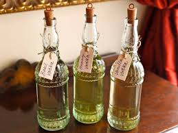

Водка — это крепкий алкогольный напиток, который традиционно изготавливается путем дистилляции зерновых или картофеля. Обычно содержит 40% алкоголя по объему, хотя содержание может варьироваться.Прозрачная и чистая, водка имеет нейтральный вкус, что делает её универсальной для употребления в чистом виде или в составе коктейлей. Она является неотъемлемой частью русской культуры и истории, часто ассоциируется с традициями, праздниками и застольями. Классическая водка производится с минимальным количеством добавок, но существуют также варианты с ароматическими ингредиентами, такими как мед, травы, ягоды или цитрусовые. Качество напитка зависит от используемого сырья и степени очистки.Водка занимает особое место в мировой культуре благодаря своей популярности и репутации как напитка, способного объединить людей за общим столом.
Really easy, right?
Baaack